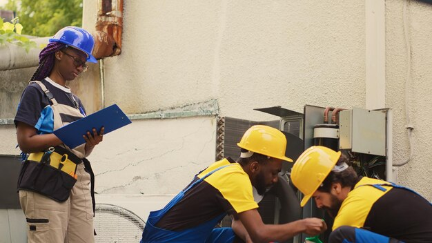

Explore
Ways world support can help
1. Education
World support can provide resources, expertise, and funding to improve educational systems, build schools, and offer scholarships, making education more accessible to underserved communities.
2. Start up business

World support can offer mentorship, training, and access to markets, helping entrepreneurs in developing regions launch and grow their businesses.
3. Housing

World support can assist in building affordable housing and improving living conditions in impoverished areas.
4. Agriculture

World support can significantly impact agriculture by providing resources, expertise, and collaborative efforts to improve agricultural practices and food security.
5. Disaster Relief
World support can mobilize resources and expertise for disaster response and recovery, providing emergency aid, rebuilding infrastructure, and supporting affected communities.
6. Healthcare
World support can bring medical expertise, supplies, and infrastructure to areas lacking healthcare services, improving public health outcomes and fighting diseases.